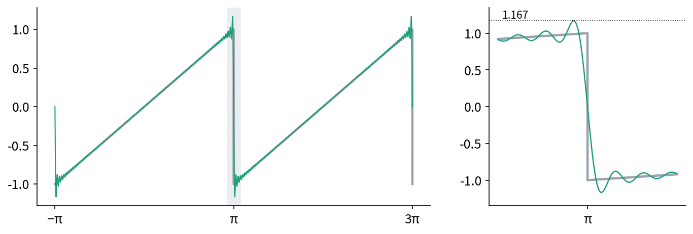
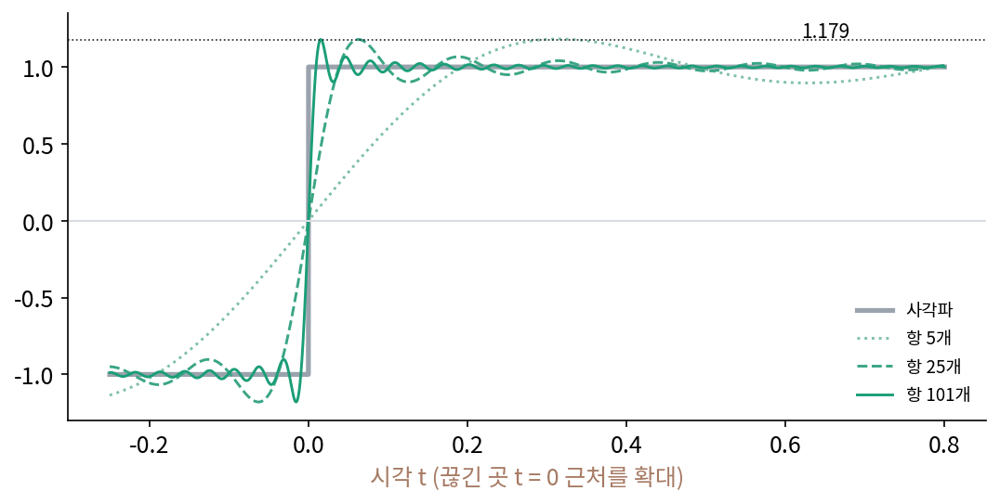
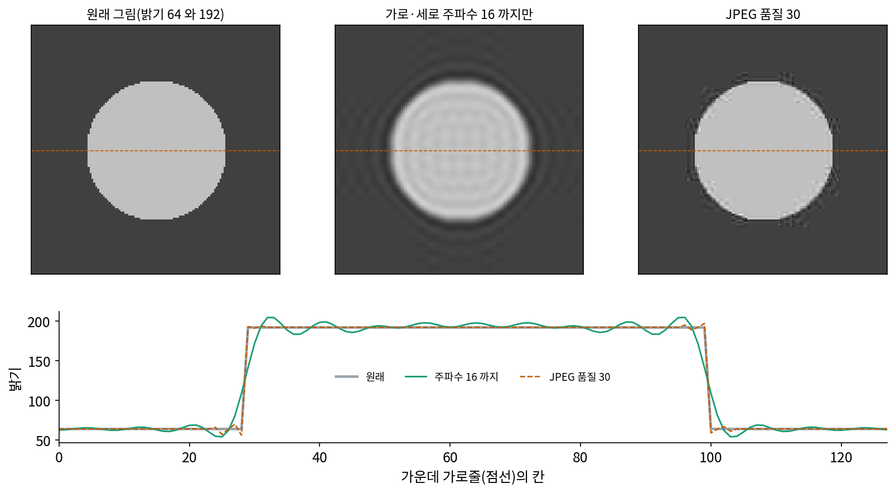
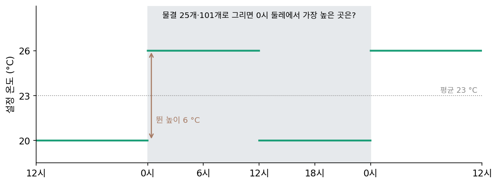
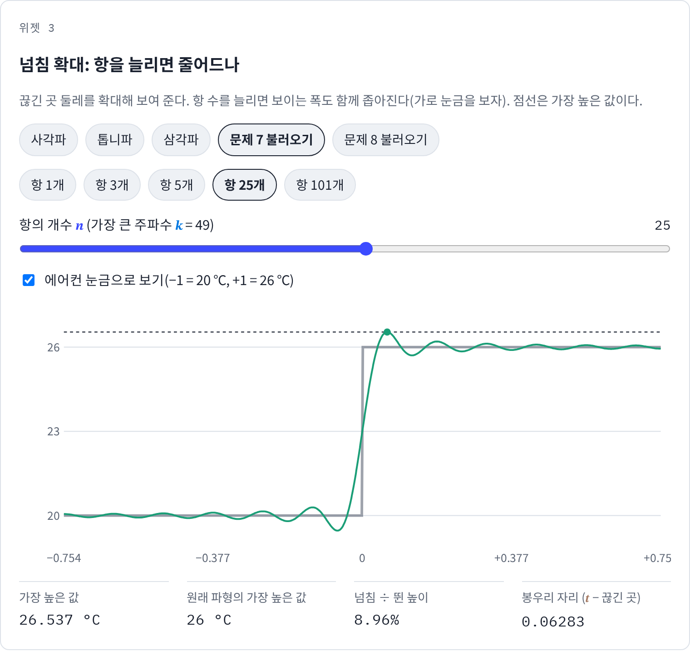
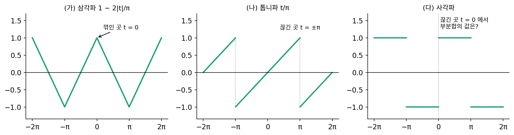
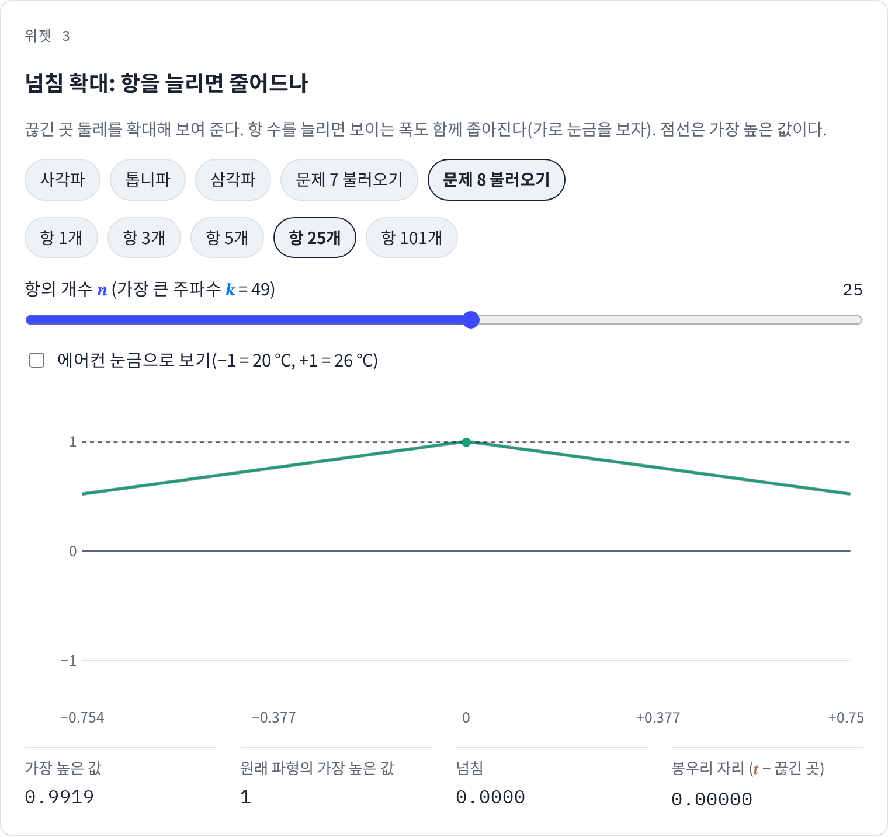
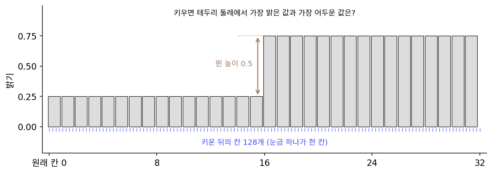

깁스 현상: 끊긴 곳에서 9% 남짓 넘친다
사각파의 부분합은 주파수를 올릴수록 제곱 오차가 줄었다. 그런데 부분합을 그려 보면 끊긴 곳 t = 0 바로 옆에 원래 높이 1보다 높이 솟은 봉우리가 있다. 항을 더 더하면 이 봉우리는 낮아져 사라질까? 제곱 오차가 0으로 간다면 어디서나 원래 함수와 같아진다고 말해도 될까?
역사: 기계가 그린 봉우리와 『네이처』의 편지들
1898년 빛의 속도를 잰 것으로 이름난 미국의 물리학자 마이컬슨(Albert A. Michelson)은 스트래튼(Samuel W. Stratton)과 함께 새 조화 분석기를 『미국 과학 저널』에 발표했는데, 톰슨의 조수 예측기가 줄과 도르래로 물결을 더했다면, 이 기계는 용수철로 더했다. 먼저 성분 20개짜리를 만들고, 이어 계수를 80개까지 넣을 수 있는 기계를 만들었다(런던 과학박물관에 한 대가 있다). 계수를 넣으면 부분합의 곡선을 그리고, 곡선을 넣으면 계수를 구했다.
같은 해 10월 6일 마이컬슨은 『네이처』에 짧은 편지를 보내, 끊긴 함수의 푸리에 급수가 끊긴 곳에서 어떻게 수렴하느냐를 물었다. 10월 13일 영국의 수학자 러브(A. E. H. Love)가 답했고, 편지가 몇 차례 오갔다. 12월 29일 호에 실린 편지에서 예일 대학의 물리학자 깁스(J. Willard Gibbs)는 톱니파의 부분합을 두고 「그래프들의 극한」과 「합의 극한의 그래프」가 다르다는 것을 짚었다. 그런데 그 편지가 그린 극한의 모양은 끊긴 곳 옆의 봉우리를 빠뜨려 틀렸다. 깁스는 1899년 4월 27일 호에 정정을 내고, 부분합이 끊긴 곳 옆에서 원래 값보다 뛴 높이에 비례하는 일정한 높이만큼 넘친 채 남는다고 적었다. 1906년 하버드의 보허(Maxime Bôcher)가 이 넘침을 자세히 분석하면서 「깁스 현상」이라는 이름을 붙였다.
그런데 깁스보다 50년 앞선 1848년, 영국 케임브리지의 윌브러햄(Henry Wilbraham)이 「어떤 주기 함수에 관하여」라는 논문에서 같은 넘침을 계산해 두었다. 이 논문은 1914년 독일의 부르크하르트(Heinrich Burkhardt)가 해설 글에서 다루기 전까지 거의 읽히지 않았다. 마이컬슨이 기계가 그린 봉우리를 보고 기계의 결함 탓으로 여겼다는 이야기가 널리 퍼져 있지만, 이는 전해지는 말이다. 그 기계의 그림은 넘침을 또렷이 보여 줄 만큼 정밀하지 않았고, 마이컬슨은 논문과 편지 어디에서도 그런 말을 하지 않았다는 지적이 있다.


지금은 부분합을 그려 보면 끊긴 곳 옆 봉우리가 바로 보이잖아요. 그걸 두고 『네이처』에 편지가 몇 달이나 오갔다는 게 신기해요.

민준 학생은 항을 몇 개까지 넣어 볼 수 있어요? 마이컬슨의 기계는요?

저는 1001개도 그냥 돌리죠. 기계는 80개가 끝이었고요. 아, 항을 더 늘리면 봉우리가 사라지는지 그림으로 확인할 길이 없었겠네요. 그 기계 그림이 넘침을 또렷이 보여 줄 만큼 정밀하지 않았다는 지적도 있고요.

그럼 항이 끝없이 많을 때를 계산으로 따지면 되잖아요. 깁스도 그렇게 했고요.

그런데 깁스의 첫 편지는 극한의 모양에서 봉우리를 빠뜨렸고, 넉 달 뒤에 정정을 냈어요. 같은 넘침을 50년 전에 계산해 둔 윌브러햄의 논문은 그때 아무도 떠올리지 못했고요.

깁스도 헷갈렸다면… 점 하나를 고정해 놓고 항을 늘리면 그 점의 값은 원래 값으로 가잖아요. 그런데 그림에는 봉우리가 남아 있어요. 항을 늘리면 봉우리는 낮아지는 거예요, 아니면 어디로 옮겨 가는 거예요?
사각파를 항 1, 3, 5, 25, 101개로
사각파는 홀수 주파수만 있으므로 「항 n개」는 주파수 1, 3, …, 2n − 1을 더한 것이다. 끊긴 곳 t = 0 오른쪽에서 가장 높은 값과 봉우리 자리를 구하면 아래와 같다.
| 항의 개수 n | 가장 큰 주파수 | 가장 높은 값 | 넘침 ÷ 뛴 높이 2 | 봉우리 자리 t |
|---|---|---|---|---|
| 1 | 1 | 1.2732 | 13.66% | 1.5708 |
| 3 | 5 | 1.1884 | 9.42% | 0.5236 |
| 5 | 9 | 1.1823 | 9.12% | 0.3142 |
| 25 | 49 | 1.1791 | 8.96% | 0.0628 |
| 101 | 201 | 1.1790 | 8.95% | 0.0156 |
항이 늘어도 봉우리는 낮아지지 않는다. 25개에서 101개로 네 배 늘려도 1.1791에서 1.1790으로 거의 그대로다. 달라지는 것은 봉우리의 자리로, 0.0628에서 0.0156으로 네 배 가까워졌다. 봉우리 자리는 π/(가장 큰 주파수 + 1)과 같다. 넘침은 끝까지 남고, 넘치는 구간만 끊긴 곳 쪽으로 좁아진다.

이 높이는 항을 끝없이 늘린 극한에서 계산할 수 있다. 봉우리 자리 t = π/(2n)에서 부분합을 적고 n을 키우면 합이 적분으로 바뀌어 아래 값에 닿는다.
끊긴 곳에서 값이 뛴 높이(−1에서 +1, 2)의 0.0895, 곧 9% 남짓만큼 위로 넘치고, 반대쪽에서는 같은 만큼 아래로 넘친다. 이렇게 끊긴 곳 옆에서 부분합이 뛴 높이의 9% 남짓 넘치고, 항을 늘려도 넘침은 줄지 않고 폭만 좁아지는 것을 깁스 현상 (끊긴 곳 옆의 줄지 않는 넘침 / Gibbs phenomenon)이라 한다.
그렇다면 제곱 오차가 0으로 가는 것과는 어떻게 맞을까? 넘치는 높이는 그대로이지만 넘치는 폭이 좁아지므로 넓이는 0으로 가서, 넓이로 재면 원래 함수에 다가가고, 가장 큰 차이로 재면 다가가지 않는다. 끊긴 곳에서 조금이라도 떨어진 한 점 t를 고정하고 보면 그 점의 값은 결국 원래 값에 다가간다. 봉우리가 그 점을 지나 끊긴 곳 쪽으로 물러나기 때문이다.
ML에서: JPEG 과 업샘플링의 링잉
그림의 날카로운 테두리는 밝기가 뚝 끊기는 곳이어서, 높은 주파수를 버리면 그 둘레에 같은 넘침이 물결로 번진다. 테두리 둘레의 이 물결 무늬를 링잉(ringing, 울림)이라 부른다. 밝기 64인 바탕 위에 밝기 192인 원판을 그린 128 × 128 그림에서 가로·세로 주파수 16까지만 남기면, 테두리 안쪽은 207까지 밝아지고 바깥쪽은 50까지 어두워진다. 뛴 높이 128의 12% 정도인데, 주파수 32까지 남겨도 207.3으로 거의 그대로다. 같은 그림을 JPEG 품질 30으로 줄이면 테두리 둘레에서만 밝기가 231까지 오르고 22까지 내려간다. JPEG 은 8 × 8 조각마다 코사인 계수를 거칠게 줄여 적으므로, 끊긴 곳이 든 조각에서 높은 주파수 계수가 깎여 테두리 옆에 넘침이 생긴다.

작은 그림을 크게 키울 때(업샘플링)도 같다. 낮은 주파수만 가진 신호로 보고 높은 주파수를 0으로 채워 키우는 방법(이상적인 로우패스 필터. 필터는 어떤 주파수는 남기고 어떤 주파수는 걷어 내는 연산이고, 로우패스는 낮은 주파수만 통과시킨다는 뜻이다)은 계단 테두리에 넘침을 남긴다. 신경망이 그림이나 장면을 함수로 배울 때, 날카로운 경계를 낮은 주파수 위주로 그리면 같은 물결이 남는다. 신경망이 어떤 주파수부터 배우는지는 스펙트럼 편향이라는 이름으로 따로 다룬다.
문제 7. 에어컨 설정 온도를 물결로
하루를 한 주기로 보고, 방 온도의 설정값이 0 시에 20 °C 에서 26 °C 로 바뀌었다가 12 시에 다시 20 °C 로 돌아오는 사각파라고 하자(평균 23 °C, 높이 ±3 °C). 이 계단을 물결 25 개(사각파의 항 25 개)로 그리면 (가) 가장 높은 온도는 몇 도인가? (나) 물결을 101 개로 늘리면? (다) 봉우리는 0 시에서 몇 분 뒤에 오는가? (위젯 3의 「문제 7 불러오기」는 에어컨 눈금으로 보여 준다.)

(가)는 9% 넘치니까 26 × 1.09 = 28.3도요. (나)는 물결이 많아지면 더 정확해지니까 26도에 가까워질 거고요.
9%는 무엇의 9%였죠?
뛴 높이예요. 20에서 26으로 뛰었으니 6도의 0.0895, 0.537도가 넘쳐요. 26.537도요.
아, 온도 값 전체가 아니라 계단 높이요. 위젯에서 불러오면 항 25개에서 26.537이에요. (나)는 101개로 올려 보니… 26.537 그대로예요. 안 줄어요.
그러면 101개로 늘린 게 아무 소용이 없었나요?

봉우리 자리가 달라요. 하루를 2π로 놓으면 25개일 때는 0시 14.4분 뒤, 101개일 때는 3.6분 뒤예요. 넘치는 동안이 짧아졌어요.

넘치는 시간은 줄고 넘치는 높이는 26.537 로 같아. 하루 평균으로 재면 점점 정확해지지만, 「한 번이라도 26.5도를 넘었나」를 물으면 물결을 몇 개 쓰든 넘었다고 답하게 돼.

조교님이 그래프를 매끄럽게 하려고 점을 더 찍어도, 계단 데이터를 사인으로 맞추면 꼭 끝에 튀는 게 남는다고 했던 게 이거였어요.

문제 8. 꺾인 곳과 끊긴 곳
(가) 삼각파 1 − 2|t|/π 는 t = 0 에서 꺾여 있다(값은 이어지고 기울기가 뚝 바뀐다). 항 25 개, 101 개 부분합의 가장 큰 값은 얼마인가? 넘침이 있는가? (나) 톱니파 t/π 는 t = ±π 에서 끊긴다. 주파수 1 부터 101 까지, 1001 까지 더한 부분합의 가장 큰 값은? (다) 끊긴 곳 t = 0 에서 사각파 부분합의 값은 얼마인가? (위젯 3의 「문제 8 불러오기」로 삼각파를, 「톱니파」 단추로 톱니파를 볼 수 있다.)

(가)는 꺾인 곳이니까 거기서도 9% 넘치겠죠. 모서리잖아요.
위젯에서 삼각파를 불러와 가장 높은 값을 볼래요?
항 25개에서 0.99190, 101개에서 0.99799예요. 1을 안 넘어요. 넘침이 없어요. 오히려 꼭짓점이 조금 뭉툭해요.

깁스 현상은 값이 뛰는 곳에서 생기는 거구나. 삼각파는 값이 이어져 있고 기울기만 바뀌니까 부분합이 위에서 넘치지 않아.
넘침 말고, 부분합과 삼각파의 가장 큰 차이는 어떻게 줄어요?
0.0081에서 0.0020으로 줄어요.
네 배나 줄었네. 계수가 1/k²으로 빨리 줄어서 그래.
(나)는 톱니파도 끊겼으니 1.179겠지. 해 보면 101개에서 1.1692, 1001개에서 1.1780이야. 사각파는 25개면 이미 1.1791이었는데, 톱니파는 다가가는 게 느리네.

톱니파의 「항 n개」와 사각파의 「항 n개」는 가장 큰 주파수가 같은가요?
아니에요. 사각파는 홀수만이라 항 101개면 주파수 201까지고, 톱니파는 101까지예요.

그럼 톱니파가 느린 게 아니라 덜 간 거네?
응, 같은 주파수까지로 견줘야 해. 그래도 극한은 똑같이 뛴 높이의 9% 남짓, 1.179로 가.
(다)는 t = 0이면 sin이 다 0이라서 0이에요. 원래 값은 −1도 +1도 아닌데.

끊긴 곳에서는 양쪽 값 −1과 +1의 한가운데로 가는 거야. 해석학에서 디리클레 정리의 「좌극한과 우극한의 평균」이 이 0이었어.

문제 9. 계단을 네 배로 키우기
칸 32 개짜리 신호의 앞 16 칸은 밝기 0.25, 뒤 16 칸은 0.75 다(뛴 높이 0.5). 이 신호를 칸 128 개로 네 배 키운다. (가) 이웃 칸을 직선으로 이어 키우면 가장 밝은 값은? (나) 주파수 칸에 0 을 채워 키우면(높은 주파수가 없는 신호라고 보고 키우는 이상적인 로우패스 필터) 가장 밝은 값과 가장 어두운 값은? (다) 칸 512 개를 2048 개로 키우면 넘침이 줄어드는가?

(가)는 직선으로 이으면 0.25와 0.75 사이 값만 나오니까 0.75요. (나)는 주파수로 하는 게 더 정확한 방법이니까 0.75 그대로겠죠.
높은 주파수를 0으로 채운다는 것이 원래 신호에 대해 무엇을 가정하는 건지 생각해 보세요.
원래 신호에 주파수 16 위로는 아무것도 없다고 보는 거예요. 그런데 계단은 높은 주파수가 끝없이 있어야 하잖아요. 돌려 보니 가장 밝은 값 0.8188, 가장 어두운 값 0.1812예요. 뛴 높이의 13.76%씩 넘쳐요.
9%가 아니라 14%네. 칸 32개짜리 계단은 연속 사각파와 달리 칸 사이에서 뛰는 계단이라 숫자가 다르구나. (다)는 칸이 많아지면 줄어들지 않을까?
512개를 2048개로 하면 13.66%예요. 32개에서 13.76%였으니 거의 그대로예요.
넘침의 크기는 무엇이 정하고, 칸 수를 늘리면 무엇이 바뀌었을까요?

넘침은 「끊긴 곳을 높은 주파수 없이 그렸다」는 사실이 정해서 칸 수와 상관이 없어요. 칸이 촘촘하면 넘치는 폭이 좁아질 뿐이에요. 사각파의 항을 늘린 것과 같아요. 그래서 그림을 키우는 프로그램들은 이상적인 로우패스 필터 대신 넘침이 덜한 방법을 고르는 거고요.

발표 자료에 작은 로고를 크게 키우면 글자 테두리에 흰 띠가 생겼던 게 이거였어요.